Netstat命令显示各种网络相关信息，如网络连接，路由表，接口统计信息，伪装连接，组播成员资格等，
一些实用的netstat命令的示例：
- -a -all ：显示侦听和非侦听套接字。 使用-interfaces选项，显示未启动的接口
# netstat -a | more : To show both listening and non-listening sockets.
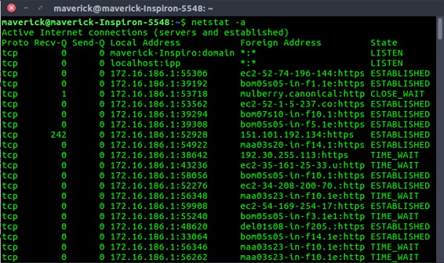

- 列出所有tcp端口。
# netstat -at : To list all tcp ports.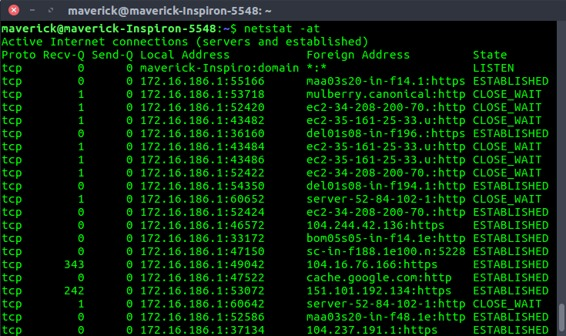
- 列出所有udp端口。
# netstat -au : To list all udp ports.
- 仅列出侦听端口。
# netstat -l : To list only the listening ports.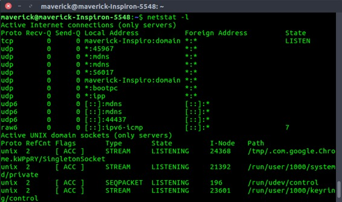
- 仅列出侦听TCP端口。
# netstat -lt : To list only the listening tcp ports.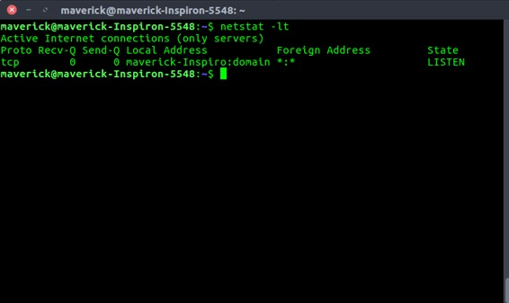
- 仅列出侦听UDP端口。
# netstat -lu : To list only the listening udp ports.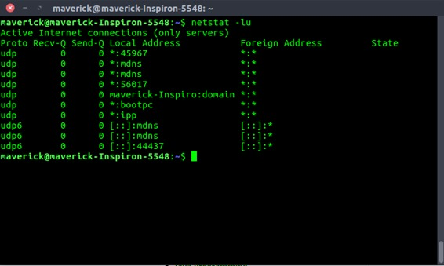
- 仅列出侦听UNIX端口
# netstat -lx : To list only the listening UNIX ports.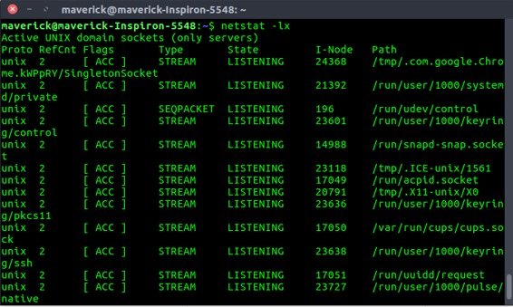
- 列出所有端口的统计信息。
# netstat -s : To list the statistics for all ports.
- 列出TCP（或）UDP端口的统计信息。
# netstat -st(TCP) : To list the statistics for TCP ports.
# netstat -su(UDP) : List the statistics for UDP ports.
- 在输出中显示PID和程序名称。
# netstat -pt : To display the PID and program names.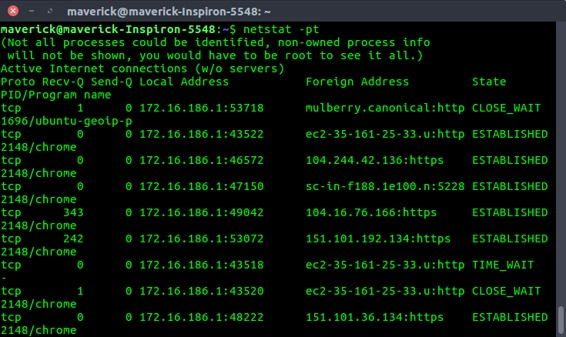
- 连续打印netstat信息。
netstat将每隔几秒钟连续打印信息。
# netstat -c : To print the netstat information continuously.
- 系统中的非支持地址族。
# netstat --verbose : To get the non-supportive address families in the system.
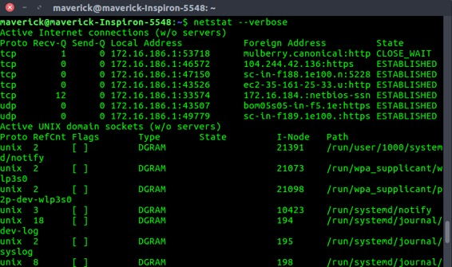
At the end, we have something like this :
- 内核路由信息。
# netstat -r : To get the kernel routing information.
- 程序运行的端口。
# netstat -ap | grep ssh : To get the port on which a program is running.

- 哪个进程正在使用特定端口：
# netstat -an | grep ':80' : To get the process which is using the given port.
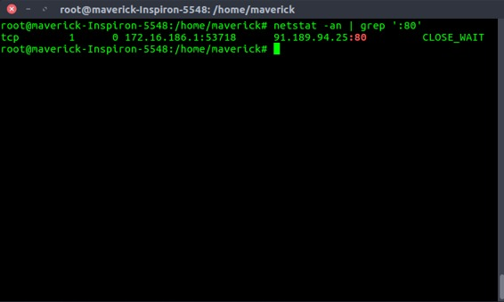
- 网络接口列表。
# netstat -i : To get the list of network interfaces.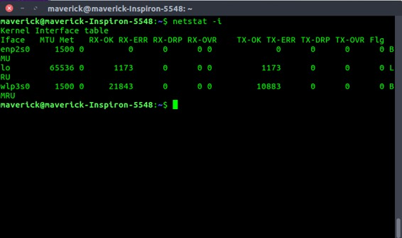
Display extended information on the interfaces (similar to ifconfig) using netstat -ie: # netstat -ie : To display extended information on the interfaces
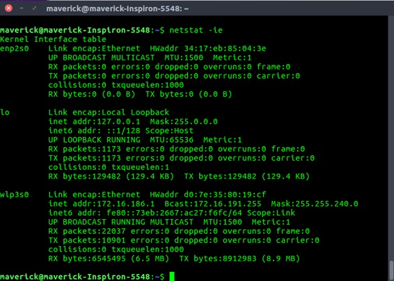
参考：
netstat的Linux手册页